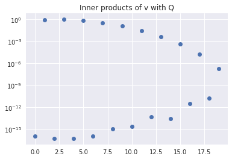
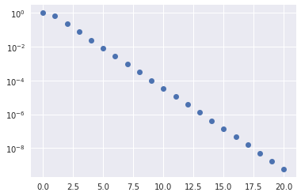
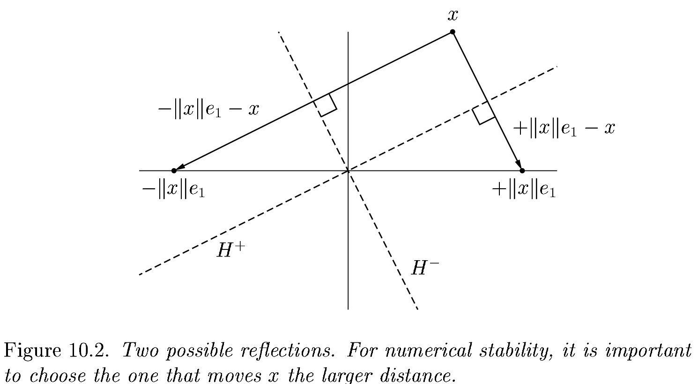
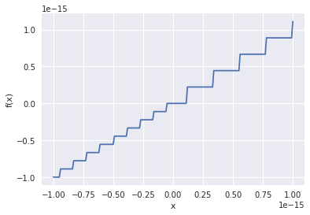
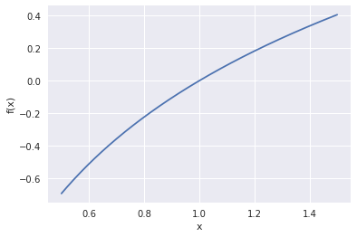
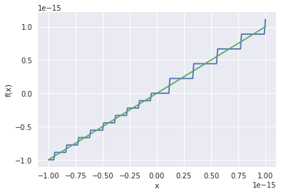
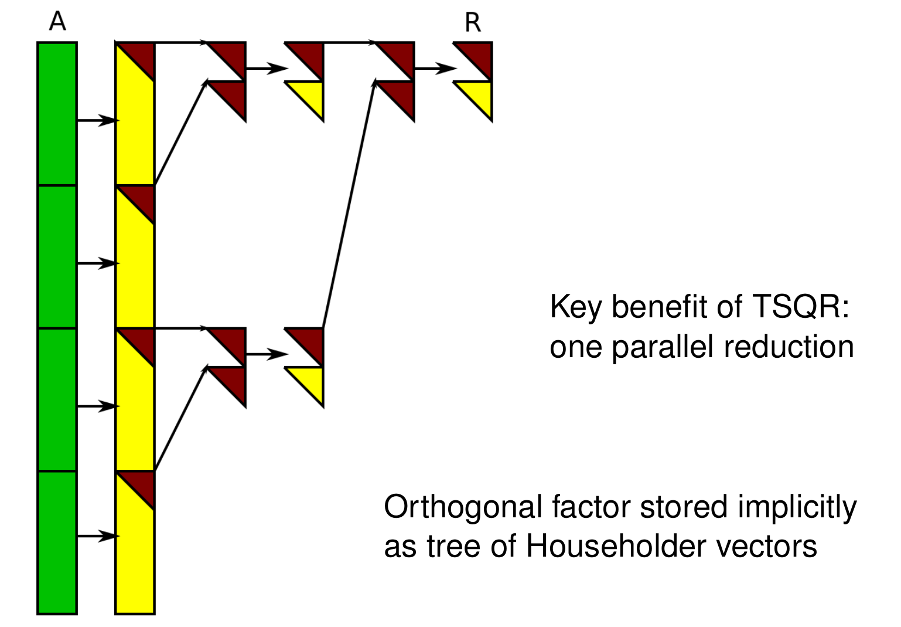

%matplotlib inline
import numpy as np
import matplotlib.pyplot as plt
plt.style.use('seaborn')
Orthogonalization and QR factorization
Given a collection of vectors (columns of a matrix), we can find an orthogonal basis by applying the above procedure one column at a time and saving the result. Let’s think of the first two columns, $$ \Bigg[ a_0 \, \Bigg| \, a_1 \Bigg] = \Bigg[ q_0 \,\Bigg|\, q1 \Bigg] \begin{bmatrix} r{00} & r{01} \ 0 & r{11} \end{bmatrix} . $$
Column 0
The equation for column 0 reads $$ a_0 = q0 r{00} $$ and we require that $\lVert q0 \rVert = 1$, thus $$ r{00} = \lVert a_0 \rVert $$ and $$ q_0 = a0 / r{00} . $$
Column 1
This equation reads $$ a_1 = q0 r{01} + q1 r{11} $$ where $a_1$ and $q_0$ are known and we will require that $q_0^T q_1 = 0$. We can find the part of $a_1$ that is orthogonal to $q_0$ via $$ (I - q_0 q_0^T) a_1 = a_1 - q_0 \underbrace{q_0^T a1}{r_{01}} $$ leaving a sub-problem equivalent to that of column 0.
def gram_schmidt_naive(A):
"""Compute a QR factorization of A using the Gram-Schmidt algorithm"""
Q = np.zeros_like(A)
R = np.zeros((A.shape[1], A.shape[1]))
for i in range(len(Q.T)):
v = A[:,i].copy()
for j in range(i):
r = Q[:,j] @ v
R[j,i] = r
v -= Q[:,j] * r # "modified Gram-Schmidt"
R[i,i] = np.linalg.norm(v)
Q[:,i] = v / R[i,i]
return Q, R
x = np.linspace(-1, 1)
A = np.vander(x, 4, increasing=True)
Q, R = gram_schmidt_naive(A)
print(Q.T @ Q)
print(np.linalg.norm(Q @ R - A))
plt.plot(x, Q);
[[ 1.00000000e+00 2.06727448e-17 -7.22457952e-17 -2.05232865e-16]
[ 2.06727448e-17 1.00000000e+00 1.13635722e-16 -5.08904737e-16]
[-7.22457952e-17 1.13635722e-16 1.00000000e+00 4.66276733e-17]
[-2.05232865e-16 -5.08904737e-16 4.66276733e-17 1.00000000e+00]]
4.744563050812836e-16

Theorem: all full-rank $m\times n$ matrices ($m \ge n$) have a unique $Q R$ factorization with $R_{j,j} > 0$.
m = 20
V = np.vander(np.linspace(-1,1,m), increasing=True)
Q, R = gram_schmidt_naive(V)
def qr_test(qr, V):
Q, R = qr(V)
m = len(Q.T)
print('{:20} {:.2e} {:.2e}'.format(
qr.__name__,
np.linalg.norm(Q @ R - V),
np.linalg.norm(Q.T @ Q - np.eye(m))))
qr_test(gram_schmidt_naive, V)
qr_test(np.linalg.qr, V)
gram_schmidt_naive 9.52e-16 3.04e-09
qr 2.74e-15 2.39e-15
Left-looking algorithms: reducing the number of inner products
def gram_schmidt_classical(A):
Q = np.zeros_like(A)
R = np.zeros((len(A.T),len(A.T)))
for i in range(len(Q.T)):
v = A[:,i].copy()
R[:i,i] = Q[:,:i].T @ v
v -= Q[:,:i] @ R[:i,i]
R[i,i] = np.linalg.norm(v)
Q[:,i] = v / R[i,i]
return Q, R
qr_test(gram_schmidt_classical, V)
gram_schmidt_classical 9.14e-16 1.42e+00
Classical Gram-Schmidt is highly parallel, but unstable, as evidenced by the lack of orthogonality in $Q$.
Right-looking algorithms
The implementations above have been “left-looking”; when working on column $i$, we compare it only to columns to the left (i.e., $j < i$). We can reorder the algorithm to look to the right by projecting $q_i$ out of all columns $j > i$. This algorithm is stable while being just as parallel as gram_schmidt_classical.
def gram_schmidt_modified(A):
Q = A.copy()
R = np.zeros((len(A.T), len(A.T)))
for i in range(len(Q.T)):
R[i,i] = np.linalg.norm(Q[:,i])
Q[:,i] /= R[i,i]
R[i,i+1:] = Q[:,i].T @ Q[:,i+1:]
Q[:,i+1:] -= np.outer(Q[:,i], R[i,i+1:])
return Q, R
qr_test(gram_schmidt_modified, V)
gram_schmidt_modified 8.32e-16 1.32e-08
Stability
Since QR factorization is unique (with positive diagonal of $R$), if we were to work in exact arithmetic, classical and modified Gram-Schmidt would produce the same result. Note that modified Gram-Schmidt sequentially applies the projections into the orthogonal complement of each column $q_j$ of $Q$. That is, given a vector $x$, we sequentially project $(I - q_j q_j^T) x$ for each column $j < i$. This is equivalent to projecting all those columns at once due to
\begin{align}
(I - q_1 q_1^T) (I - q_0 q_0^T) x &= \big(I - q_0 q_0^T - q_1 q_1^T + q_1 \underbrace{q_1^T q0}{=0} q_0^T \big) x
&= (I - q_0 q_0^T - q_1 q_1^T) x
&= (I - Q Q^T) x
\end{align}
where $Q = [q_0 | q_1 ]$. This identity can be applied recursively to convert modified Gram-Schmidt to classical, but the identity is not exact in finite precision arithmetic.
v = V[:,-1]
print('norm(v)', np.linalg.norm(v))
print('r', R[-1,-1])
plt.semilogy(np.abs(Q.T @ v), 'o')
plt.title('Inner products of v with Q');
norm(v) 1.4245900685395503
r 1.7146698318004178e-07

def test_sum(n):
def gen(first, n, factor=2/3):
l = [first]
ifactor = 1-factor
for i in range(n):
l.append(-first * factor * ifactor**i)
return l, first * ifactor**n
def sum_seq(numbers):
s = 0
for a in numbers:
s += a
return s
def sum_block(numbers):
s = 0
for a in numbers[1:]:
s += a
return numbers[0] + s
numbers, exact = gen(1, n)
print(numbers)
plt.semilogy(np.abs(numbers), 'o')
seq_err = sum_seq(numbers) - exact
block_err = sum_block(numbers) - exact
numpy_err = np.sum(numbers) - exact
print('seq abs {:.4e} rel {:.4e}'.format(seq_err, seq_err/exact))
print('block abs {:.4e} rel {:.4e}'.format(block_err, block_err/exact))
print('numpy abs {:.4e} rel {:.4e}'.format(numpy_err, numpy_err/exact))
test_sum(20)
[1, -0.6666666666666666, -0.22222222222222224, -0.07407407407407408, -0.024691358024691364, -0.008230452674897124, -0.0027434842249657075, -0.0009144947416552361, -0.0003048315805517454, -0.00010161052685058181, -3.3870175616860605e-05, -1.1290058538953536e-05, -3.763352846317846e-06, -1.2544509487726156e-06, -4.181503162575385e-07, -1.3938343875251286e-07, -4.6461146250837626e-08, -1.548704875027921e-08, -5.162349583426404e-09, -1.7207831944754682e-09, -5.735943981584894e-10]
seq abs 5.9562e-22 rel 2.0768e-12
block abs 5.3534e-17 rel 1.8666e-07
numpy abs 7.4670e-17 rel 2.6036e-07

Householder triangularization
Gram-Schmidt methods perform triangular transformations to build an orthogonal matrix. As we have seen, $X = QR$ is satisfied accurately, but $Q$ may not be orthogonal when $X$ is ill-conditioned. Householder triangularization instead applies a sequence of orthogonal transformations to build a triangular matrix.
$$ \underbrace{Q_{n-1} \dotsb Q0}{Q^T} A = R $$
The structure of the algorithm is
$$ \underbrace{\begin{bmatrix} * & * & * \ * & * & * \ * & * & * \ * & * & * \ * & * & * \ \end{bmatrix}}{A} \to \underbrace{\begin{bmatrix} * & * & * \ 0 & * & * \ 0 & * & * \ 0 & * & * \ 0 & * & * \ \end{bmatrix}}{Q0 A} \to \underbrace{\begin{bmatrix} * & * & * \ 0 & * & * \ 0 & 0 & * \ 0 & 0 & * \ 0 & 0 & * \ \end{bmatrix}}{Q_1 Q0 A} \to \underbrace{\begin{bmatrix} * & * & * \ 0 & * & * \ 0 & 0 & * \ 0 & 0 & 0 \ 0 & 0 & 0 \ \end{bmatrix}}{Q_2 Q_1 Q_0 A} $$
where the elementary orthogonal matrices $Q_i$ chosen to introduce zeros below the diagonal in the $i$th column of $R$. Each of these transformations will have the form $$Q_i = \begin{bmatrix} I_i & 0 \ 0 & F \end{bmatrix}$$ where $F$ is a “reflection” that achieves $$ F x = \begin{bmatrix} \lVert x \rVert \ 0 \ 0 \ \vdots \end{bmatrix} $$ where $x$ is the column of $R$ from the diagonal down. This transformation is a reflection across a plane with normal $v = Fx - x = \lVert x \rVert e_1 - x$.

The reflection, as depected above by Trefethen and Bau (1999) can be written $F = I - 2 \frac{v v^T}{v^T v}$.
A = np.random.rand(4, 4)
A = A + A.T # Random symmetric matrix
A
array([[1.71984228, 0.68338128, 1.12543662, 0.59188991],
[0.68338128, 1.5609485 , 1.03109546, 1.4707089 ],
[1.12543662, 1.03109546, 0.02375504, 0.71686222],
[0.59188991, 1.4707089 , 0.71686222, 0.88113581]])
A.T - A
array([[0., 0., 0., 0.],
[0., 0., 0., 0.],
[0., 0., 0., 0.],
[0., 0., 0., 0.]])
from scipy.linalg import block_diag
np.set_printoptions(precision=4)
def reflector(v):
return np.eye(len(v)) - 2*np.outer(v, v)
v = A[1:,0].copy()
v[0] -= np.linalg.norm(v)
v = v / np.linalg.norm(v)
F = reflector(v)
Q_0 = block_diag(np.eye(1), F)
Q_0
array([[ 1. , 0. , 0. , 0. ],
[ 0. , 0.4734, 0.7796, 0.41 ],
[ 0. , 0.7796, -0.1542, -0.607 ],
[ 0. , 0.41 , -0.607 , 0.6808]])
Q_0 @ A
array([[ 1.7198e+00, 6.8338e-01, 1.1254e+00, 5.9189e-01],
[ 1.4436e+00, 2.1458e+00, 8.0055e-01, 1.6164e+00],
[-6.8853e-17, 1.6526e-01, 3.6506e-01, 5.0122e-01],
[-2.8229e-17, 1.0154e+00, 8.9636e-01, 7.6773e-01]])
A @ Q_0
array([[ 1.7198e+00, 1.4436e+00, -6.8853e-17, -2.8229e-17],
[ 6.8338e-01, 2.1458e+00, 1.6526e-01, 1.0154e+00],
[ 1.1254e+00, 8.0055e-01, 3.6506e-01, 8.9636e-01],
[ 5.9189e-01, 1.6164e+00, 5.0122e-01, 7.6773e-01]])
def householder_Q_times(V, x):
"""Apply orthogonal matrix represented as list of Householder reflectors"""
y = x.copy()
for i in reversed(range(len(V))):
y[i:] -= 2 * V[i] * V[i].dot(y[i:])
return y
def qr_householder1(A):
"Compute QR factorization using naive Householder reflection"
m, n = A.shape
R = A.copy()
V = []
for i in range(n):
x = R[i:,i]
v = -x
v[0] += np.linalg.norm(x)
v = v/np.linalg.norm(v) # Normalized reflector plane
R[i:,i:] -= 2 * np.outer(v, v @ R[i:,i:])
V.append(v) # Storing reflectors is equivalent to storing orthogonal matrix
Q = np.eye(m, n)
for i in range(n):
Q[:,i] = householder_Q_times(V, Q[:,i])
return Q, np.triu(R[:n,:])
qr_test(qr_householder1, np.array([[1.,2],[3,4],[5,6]]))
qr_householder1 1.88e-15 3.17e-16
qr_test(qr_householder1, V)
qr_test(np.linalg.qr, V)
qr_householder1 3.15e-15 3.48e-15
qr 2.74e-15 2.39e-15
Choice of two projections
It turns out our implementation has a nasty deficiency.
qr_test(qr_householder1, np.eye(1))
qr_householder1 nan nan
/usr/lib/python3.7/site-packages/ipykernel_launcher.py:17: RuntimeWarning: invalid value encountered in true_divide
qr_test(qr_householder1, np.eye(3,2))
qr_householder1 nan nan
/usr/lib/python3.7/site-packages/ipykernel_launcher.py:17: RuntimeWarning: invalid value encountered in true_divide
Inside qr_householder1, we have the lines
x = R[i:,i]
v = -x
v[0] += numpy.linalg.norm(x)
v = v/numpy.linalg.norm(v) # Normalized reflector plane
What happens when $$x = \begin{bmatrix}1 \ 0 \end{bmatrix}$$ (i.e., the column of $R$ is already upper triangular)?
We are trying to define a reflector plane (via its normal vector) from the zero vector,
$$v = \lVert x \rVert e_0 - x .$$
When we try to normalize this vector, we divide zero by zero and the algorithm breaks down (nan). Maybe we just need to test for this special case and “skip ahead” when no reflection is needed? And if so, how would we define $Q$?
qr_test(qr_householder1, np.array([[1.,1], [2e-8,1]]))
print(qr_householder1(np.array([[1.,1], [2e-8,1]])))
qr_householder1 2.20e-09 4.44e-16
(array([[ 1.0000e+00, -2.2204e-08],
[ 2.2204e-08, 1.0000e+00]]), array([[1., 1.],
[0., 1.]]))
The error $QR - A$ is still $10^{-8}$ for this very well-conditioned matrix so something else must be at play here.

def qr_householder2(A):
"Compute QR factorization using Householder reflection"
m, n = A.shape
R = A.copy()
V = []
for i in range(n):
v = R[i:,i].copy()
v[0] += np.sign(v[0]) * np.linalg.norm(v) # Choose the further of the two reflections
v = v/np.linalg.norm(v) # Normalized reflector plane
R[i:,i:] -= np.outer(v, 2 * (v.T @ R[i:,i:]))
V.append(v) # Storing reflectors is equivalent to storing orthogonal matrix
Q = np.eye(m, n)
for i in range(n):
Q[:,i] = householder_Q_times(V, Q[:,i])
return Q, np.triu(R[:n,:])
qr_test(qr_householder2, np.eye(3,2))
qr_test(qr_householder2, np.array([[1.,1], [1e-8,1]]))
for mat in qr_householder2(np.array([[1.,1], [1e-8,1]])):
print(mat)
qr_test(qr_householder2, V)
qr_householder2 0.00e+00 0.00e+00
qr_householder2 0.00e+00 0.00e+00
[[-1.e+00 1.e-08]
[-1.e-08 -1.e+00]]
[[-1. -1.]
[ 0. -1.]]
qr_householder2 5.20e-15 3.58e-15
We now have a usable implementation of Householder QR. There are some further concerns for factoring rank-deficient matrices. We will visit the concept of pivoting later, in the context of LU and Cholesky factorization.
Conditioning
Absolute condition number
Consider a function $f: X \to Y$ and define the absolute condition number $$ \hat\kappa = \lim{\delta \to 0} \max{|\delta x| < \delta} \frac{|f(x + \delta x) - f(x)|}{|\delta x|} = \max_{\delta x} \frac{|\delta f|}{|\delta x|}. $$ If $f$ is differentiable, then $\hat\kappa = |f’(x)|$.
Floating point arithmetic
Floating point arithmetic $x \circledast y := \text{float}(x * y)$ is exact within a relative accuracy $\epsilon{\text{machine}}$. Formally, $$ x \circledast y = (x * y) (1 + \epsilon) $$ for some $|\epsilon| \le \epsilon{\text{machine}}$.
eps = 1
while 1 + eps > 1:
eps /= 2
eps_machine = eps
print('Machine epsilon = {}'.format(eps_machine))
(1 + 1.12e-16) - 1
Machine epsilon = 1.1102230246251565e-16
2.220446049250313e-16
def plot_neighborhood(f, x0, atol=1e-10, rtol=1e-10):
width = atol + rtol * np.abs(x0)
x = np.linspace(x0 - width, x0 + width, 201)
plt.plot(x, f(x))
plt.xlabel('x')
plt.ylabel('f(x)')
plot_neighborhood(lambda x: (x + 1) - 1, 0, 1e-15)

This function $f(x) = (x + 1) - 1 = x$ is well conditioned for all $x$, but this numerical algorithm is unstable (we’ll discuss this below).
plot_neighborhood(np.log, 1, .5)

The function $f(x) = \log x$ has $f’(1) = 1$. The conditioning is good in an absolute sense, $\hat \kappa = 1$. However, the outputs from np.log(1+x) have large relative error relative to the exact value, provided here by the function np.log1p(x).
plot_neighborhood(lambda x: np.log(1+x), 0, atol=1e-15)
plot_neighborhood(np.log1p, 0, atol=1e-15)

Relative condition number
Given the relative nature of floating point arithmetic, it is more useful to discuss relative condition number, $$ \kappa = \max{\delta x} \frac{|\delta f|/|f|}{|\delta x|/|x|} = \max{\delta x} \Big[ \frac{|\delta f|/|\delta x|}{|f| / |x|} \Big] $$ or, if $f$ is differentiable, $$ \kappa = |f’(x)| \frac{|x|}{|f|} . $$
How does a condition number get big?
Take-home message
The relative accuracy of the best-case algorithm will not be reliably better than $\epsilon{\text{machine}}$ times the condition number. $$ \max{\delta x} \frac{|\delta f|}{|f|} \ge \kappa \cdot \epsilon_{\text{machine}} .$$
Stability
We use the notation $\tilde f(x)$ to mean a numerical algorithm for approximating $f(x)$. Additionally, $\tilde x = x (1 + \epsilon)$ is some “good” approximation of the exact input $x$.
(Forward) Stability
“nearly the right answer to nearly the right question” $$ \frac{\lvert \tilde f(x) - f(\tilde x) \rvert}{| f(\tilde x) |} \in O(\epsilon_{\text{machine}}) $$ for some $\tilde x$ that is close to $x$
Backward Stability
“exactly the right answer to nearly the right question” $$ \tilde f(x) = f(\tilde x) $$ for some $\tilde x$ that is close to $x$
- Every backward stable algorithm is stable.
- Not every stable algorithm is backward stable.
Accuracy of backward stable algorithms (Theorem)
A backward stable algorithm for computing $f(x)$ has relative accuracy $$ \left\lvert \frac{\tilde f(x) - f(x)}{f(x)} \right\rvert \in O(\kappa(f) \epsilon_{\text{machine}}) . $$ This is a rewording of a statement made earlier – backward stability is the best case.
Condition number of a matrix
We may have informally referred to a matrix as “ill-conditioned” when the columns are nearly linearly dependent, but let’s make this concept for precise. Recall the definition of (relative) condition number from the Rootfinding notes,
$$ \kappa = \max_{\delta x} \frac{|\delta f|/|f|}{|\delta x|/|x|} . $$
We understood this definition for scalar problems, but it also makes sense when the inputs and/or outputs are vectors (or matrices, etc.) and absolute value is replaced by vector (or matrix) norms. Let’s consider the case of matrix-vector multiplication, for which $f(x) = A x$.
$$ \kappa(A) = \max{\delta x} \frac{\lVert A (x+\delta x) - A x \rVert/\lVert A x \rVert}{\lVert \delta x\rVert/\lVert x \rVert} = \max{\delta x} \frac{\lVert A \delta x \rVert}{\lVert \delta x \rVert} \, \frac{\lVert x \rVert}{\lVert A x \rVert} = \lVert A \rVert \frac{\lVert x \rVert}{\lVert A x \rVert} . $$
There are two problems here:
- I wrote $\kappa(A)$ but my formula depends on $x$.
- What is that $\lVert A \rVert$ beastie?
Stack push: Matrix norms
Vector norms are built into the linear space (and defined in term of the inner product). Matrix norms are induced by vector norms, according to
$$ \lVert A \rVert = \max_{x \ne 0} \frac{\lVert A x \rVert}{\lVert x \rVert} . $$
- This equation makes sense for non-square matrices – the vector norms of the input and output spaces may differ.
- Due to linearity, all that matters is direction of $x$, so it could equivalently be written
$$ \lVert A \rVert = \max_{\lVert x \rVert = 1} \lVert A x \rVert . $$
Stack pop
Now we understand the formula for condition number, but it depends on $x$. Consider the matrix
$$ A = \begin{bmatrix} 1 & 0 \ 0 & 0 \end{bmatrix} . $$
- What is the norm of this matrix?
- What is the condition number when $x = [1,0]^T$?
- What is the condition number when $x = [0,1]^T$?
The condition number of matrix-vector multiplication depends on the vector. The condition number of the matrix is the worst case (maximum) of the condition number for any vector, i.e.,
$$ \kappa(A) = \max_{x \ne 0} \lVert A \rVert \frac{\lVert x \rVert}{\lVert A x \rVert} .$$
If $A$ is invertible, then we can rephrase as
$$ \kappa(A) = \max{x \ne 0} \lVert A \rVert \frac{\lVert A^{-1} (A x) \rVert}{\lVert A x \rVert} = \max{A x \ne 0} \lVert A \rVert \frac{\lVert A^{-1} (A x) \rVert}{\lVert A x \rVert} = \lVert A \rVert \lVert A^{-1} \rVert . $$
Evidently multiplying by a matrix is just as ill-conditioned of an operation as solving a linear system using that matrix.
def R_solve(R, b):
"""Solve Rx = b using back substitution."""
x = b.copy()
m = len(b)
for i in reversed(range(m)):
x[i] -= R[i,i+1:].dot(x[i+1:])
x[i] /= R[i,i]
return x
Q, R = np.linalg.qr(A)
x = np.array([1,2,3,4])
bfull = A @ x
breduced = Q.T @ bfull
print(np.linalg.norm(R_solve(R, breduced)
- np.linalg.solve(R, breduced)))
R_solve(R, breduced)
4.440892098500626e-16
array([1., 2., 3., 4.])
Cost of Householder factorization
The dominant cost comes from the line
R[i:,i:] -= 2 * numpy.outer(v, v.dot(R[i:,i:]))
were R[i:,i:] is an $(m-i)\times(n-i)$ matrix.
This line performs $2(m-i)(n-i)$ operations in v.dot(R[i:,i:]), another $(m-i)(n-i)$ in the “outer” product and again in subtraction. As written, multiplication by 2 would be another $(m-i)(n-i)$ operations, but is only $m-i$ operations if we rewrite as
w = 2*v
R[i:,i:] -= numpy.outer(w, v.dot(R[i:,i:]))
in which case the leading order cost is $4(m-i)(n-i)$. To compute the total cost, we need to sum over all columns $i$,
$$\begin{split} \sum{i=1}^n 4(m-i)(n-i) &= 4 \Big[ \sum{i=1}^n (m-n)(n-i) + \sum{i=1}^n (n-i)^2 \Big]
&= 4 (m-n) \sum{i=1}^n i + 4 \sum_{i=1}^n i^2
&\approx 2 (m-n) n^2 + 4 n^3⁄3
&= 2 m n^2 - \frac 2 3 n^3 .
\end{split}$$
Recall that Gram-Schmidt QR cost $2 m n^2$, so Householder costs about the same when $m \gg n$ and is markedly less expensive when $m \approx n$.
Backward Stability of Housholder
def qr_test_backward(qr, n):
from numpy.linalg import norm
from numpy.random import randn
R = np.triu(randn(n,n))
Q, _ = np.linalg.qr(randn(n,n))
A = Q @ R
Q2, R2 = qr(A)
print('# Forward error')
print('Q error', norm(Q2 - Q))
print('R error', norm(R2 - R) / norm(R))
print('# Backward error')
A2 = Q2 @ R2
print('Q2.T @ Q2 - I', norm(Q2.T @ Q2 - np.eye(n)))
print('Q2*R2 - A', norm(A2 - A) / norm(A))
Q3, R3 = Q + 1e-5*randn(n,n), R + 1e-5*np.triu(randn(n,n))
A3 = Q3 @ R3
print('Q3*R3 - A', norm(A3 - A) / norm(A))
qr_test_backward(gram_schmidt_modified, 50)
#qr_test_backward(np.linalg.qr, 50)
# Forward error
Q error 9.380829776561018
R error 1.3114908995362393
# Backward error
Q2.T @ Q2 - I 0.008203364853000912
Q2*R2 - A 2.797766695296299e-16
Q3*R3 - A 7.070141269858638e-05
Back to parallelism: Cholesky QR (one reduction)
def chol_qr(A):
import scipy.linalg as la
B = A.T @ A
R = la.cholesky(B)
Q = A @ la.inv(R)
return Q, R
qr_test(chol_qr, V)
chol_qr 8.12e-15 1.07e-01
def chol_qr2(A):
import scipy.linalg as la
B = A.T @ A
R = la.cholesky(B)
Q = A @ la.inv(R)
R2 = la.cholesky(Q.T @ Q)
Q = Q @ la.inv(R2)
R = R2 @ R
return Q, R
qr_test(chol_qr2, V)
chol_qr2 8.36e-15 1.29e-15
TSQR: Tall-Skinny QR
 Figure from Ballard et al.